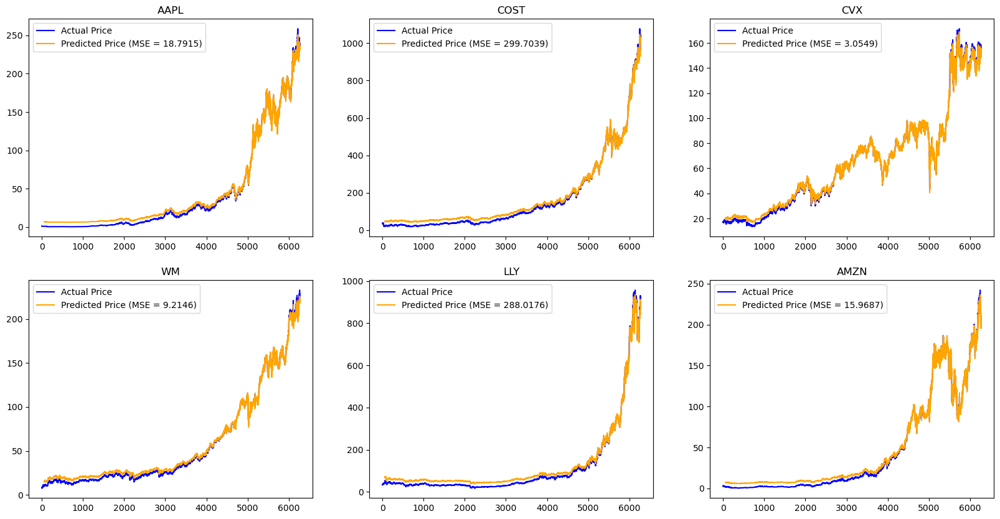
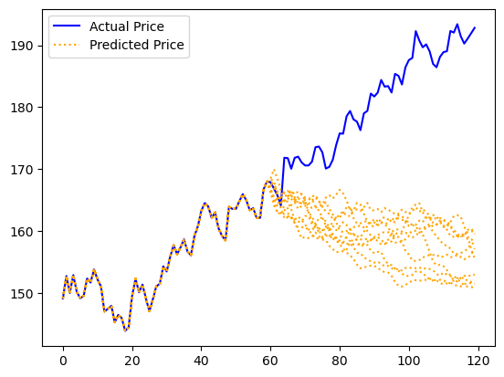
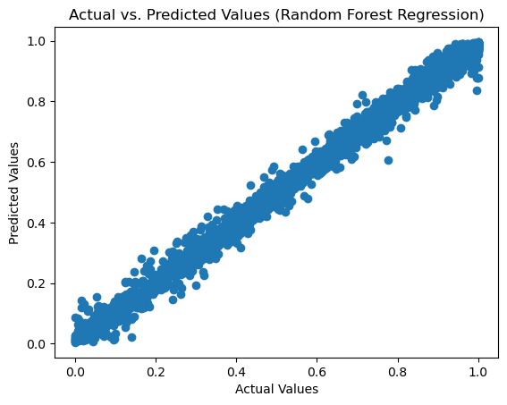
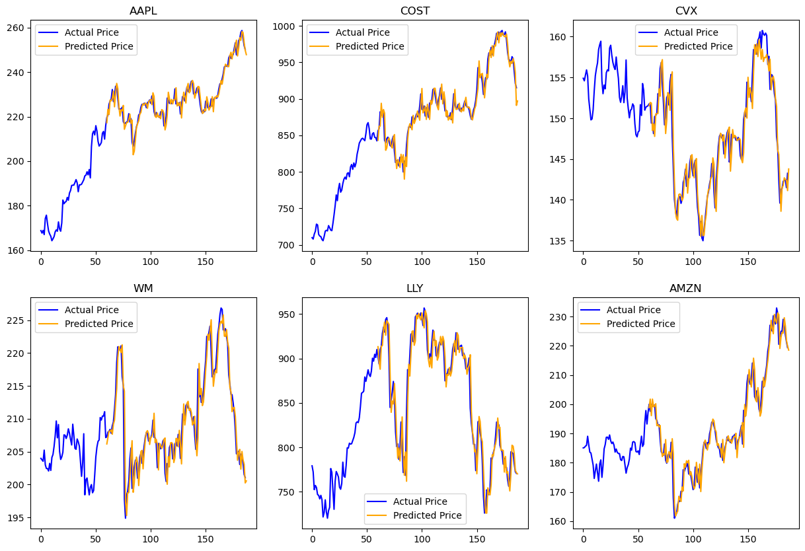
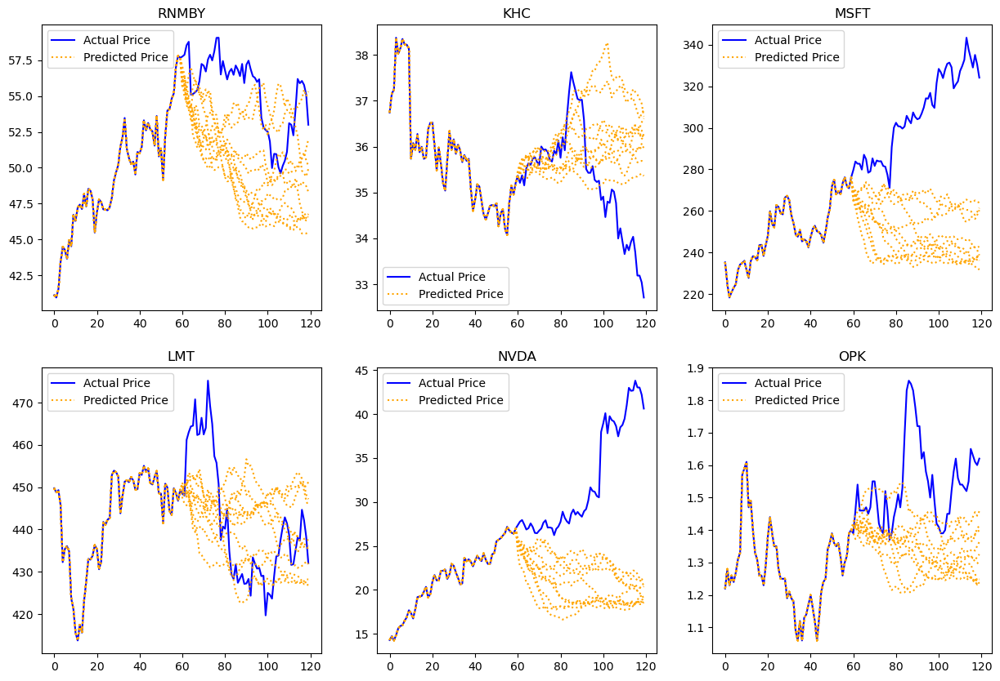

import numpy as np
import os
os.environ["KERAS_BACKEND"] = "tensorflow"
import keras
from keras import layers
import jax.numpy as jnp
import pandas as pd
from sklearn.preprocessing import LabelEncoder
from sklearn.preprocessing import MinMaxScaler
from sklearn.model_selection import train_test_split
import matplotlib.pyplot as plt
from sklearn.metrics import mean_squared_error, mean_absolute_errorIntroduction
In this post, we will discuss how to use data gathered from the Polygon and Yahoo Finance APIs to train machine learning models that will predict prospective features of the stock market.
For the purposes of this post, we will assume that the user has access to the .py files found in our github repository. However, we will still include important code from these files to explain how the models work. We will begin by importing important libraries.
import sys
import os
# Get the absolute path to the directory containing the .py files
module_path = os.path.abspath(os.path.join('..')) # Use relative or absolute path. '..' means one level up.
if module_path not in sys.path:
sys.path.append(module_path)import polygon_interface
import yahoo_interfacepip install polygon-api-clientRequirement already satisfied: polygon-api-client in /opt/anaconda3/envs/PIC16B-25W/lib/python3.11/site-packages (1.14.3)
Requirement already satisfied: certifi<2026.0.0,>=2022.5.18 in /opt/anaconda3/envs/PIC16B-25W/lib/python3.11/site-packages (from polygon-api-client) (2024.8.30)
Requirement already satisfied: urllib3<3.0.0,>=1.26.9 in /opt/anaconda3/envs/PIC16B-25W/lib/python3.11/site-packages (from polygon-api-client) (1.26.20)
Requirement already satisfied: websockets<15.0,>=10.3 in /opt/anaconda3/envs/PIC16B-25W/lib/python3.11/site-packages (from polygon-api-client) (10.4)
Note: you may need to restart the kernel to use updated packages.pip install tensorflow_decision_forestsRequirement already satisfied: tensorflow_decision_forests in /opt/anaconda3/envs/PIC16B-25W/lib/python3.11/site-packages (1.11.0)
Requirement already satisfied: numpy in /opt/anaconda3/envs/PIC16B-25W/lib/python3.11/site-packages (from tensorflow_decision_forests) (1.26.2)
Requirement already satisfied: pandas in /opt/anaconda3/envs/PIC16B-25W/lib/python3.11/site-packages (from tensorflow_decision_forests) (2.0.3)
Requirement already satisfied: tensorflow==2.18.0 in /opt/anaconda3/envs/PIC16B-25W/lib/python3.11/site-packages (from tensorflow_decision_forests) (2.18.0)
Requirement already satisfied: six in /opt/anaconda3/envs/PIC16B-25W/lib/python3.11/site-packages (from tensorflow_decision_forests) (1.16.0)
Requirement already satisfied: absl-py in /opt/anaconda3/envs/PIC16B-25W/lib/python3.11/site-packages (from tensorflow_decision_forests) (2.1.0)
Requirement already satisfied: wheel in /opt/anaconda3/envs/PIC16B-25W/lib/python3.11/site-packages (from tensorflow_decision_forests) (0.44.0)
Requirement already satisfied: wurlitzer in /opt/anaconda3/envs/PIC16B-25W/lib/python3.11/site-packages (from tensorflow_decision_forests) (3.1.1)
Requirement already satisfied: tf-keras~=2.17 in /opt/anaconda3/envs/PIC16B-25W/lib/python3.11/site-packages (from tensorflow_decision_forests) (2.18.0)
Requirement already satisfied: ydf in /opt/anaconda3/envs/PIC16B-25W/lib/python3.11/site-packages (from tensorflow_decision_forests) (0.10.0)
Requirement already satisfied: astunparse>=1.6.0 in /opt/anaconda3/envs/PIC16B-25W/lib/python3.11/site-packages (from tensorflow==2.18.0->tensorflow_decision_forests) (1.6.3)
Requirement already satisfied: flatbuffers>=24.3.25 in /opt/anaconda3/envs/PIC16B-25W/lib/python3.11/site-packages (from tensorflow==2.18.0->tensorflow_decision_forests) (25.2.10)
Requirement already satisfied: gast!=0.5.0,!=0.5.1,!=0.5.2,>=0.2.1 in /opt/anaconda3/envs/PIC16B-25W/lib/python3.11/site-packages (from tensorflow==2.18.0->tensorflow_decision_forests) (0.6.0)
Requirement already satisfied: google-pasta>=0.1.1 in /opt/anaconda3/envs/PIC16B-25W/lib/python3.11/site-packages (from tensorflow==2.18.0->tensorflow_decision_forests) (0.2.0)
Requirement already satisfied: libclang>=13.0.0 in /opt/anaconda3/envs/PIC16B-25W/lib/python3.11/site-packages (from tensorflow==2.18.0->tensorflow_decision_forests) (18.1.1)
Requirement already satisfied: opt-einsum>=2.3.2 in /opt/anaconda3/envs/PIC16B-25W/lib/python3.11/site-packages (from tensorflow==2.18.0->tensorflow_decision_forests) (3.3.0)
Requirement already satisfied: packaging in /opt/anaconda3/envs/PIC16B-25W/lib/python3.11/site-packages (from tensorflow==2.18.0->tensorflow_decision_forests) (24.1)
Requirement already satisfied: protobuf!=4.21.0,!=4.21.1,!=4.21.2,!=4.21.3,!=4.21.4,!=4.21.5,<6.0.0dev,>=3.20.3 in /opt/anaconda3/envs/PIC16B-25W/lib/python3.11/site-packages (from tensorflow==2.18.0->tensorflow_decision_forests) (5.29.3)
Requirement already satisfied: requests<3,>=2.21.0 in /opt/anaconda3/envs/PIC16B-25W/lib/python3.11/site-packages (from tensorflow==2.18.0->tensorflow_decision_forests) (2.32.3)
Requirement already satisfied: setuptools in /opt/anaconda3/envs/PIC16B-25W/lib/python3.11/site-packages (from tensorflow==2.18.0->tensorflow_decision_forests) (74.1.2)
Requirement already satisfied: termcolor>=1.1.0 in /opt/anaconda3/envs/PIC16B-25W/lib/python3.11/site-packages (from tensorflow==2.18.0->tensorflow_decision_forests) (2.5.0)
Requirement already satisfied: typing-extensions>=3.6.6 in /opt/anaconda3/envs/PIC16B-25W/lib/python3.11/site-packages (from tensorflow==2.18.0->tensorflow_decision_forests) (4.12.2)
Requirement already satisfied: wrapt>=1.11.0 in /opt/anaconda3/envs/PIC16B-25W/lib/python3.11/site-packages (from tensorflow==2.18.0->tensorflow_decision_forests) (1.17.2)
Requirement already satisfied: grpcio<2.0,>=1.24.3 in /opt/anaconda3/envs/PIC16B-25W/lib/python3.11/site-packages (from tensorflow==2.18.0->tensorflow_decision_forests) (1.71.0)
Requirement already satisfied: tensorboard<2.19,>=2.18 in /opt/anaconda3/envs/PIC16B-25W/lib/python3.11/site-packages (from tensorflow==2.18.0->tensorflow_decision_forests) (2.18.0)
Requirement already satisfied: keras>=3.5.0 in /opt/anaconda3/envs/PIC16B-25W/lib/python3.11/site-packages (from tensorflow==2.18.0->tensorflow_decision_forests) (3.9.0)
Requirement already satisfied: h5py>=3.11.0 in /opt/anaconda3/envs/PIC16B-25W/lib/python3.11/site-packages (from tensorflow==2.18.0->tensorflow_decision_forests) (3.13.0)
Requirement already satisfied: ml-dtypes<0.5.0,>=0.4.0 in /opt/anaconda3/envs/PIC16B-25W/lib/python3.11/site-packages (from tensorflow==2.18.0->tensorflow_decision_forests) (0.4.1)
Requirement already satisfied: tensorflow-io-gcs-filesystem>=0.23.1 in /opt/anaconda3/envs/PIC16B-25W/lib/python3.11/site-packages (from tensorflow==2.18.0->tensorflow_decision_forests) (0.37.1)
Requirement already satisfied: python-dateutil>=2.8.2 in /opt/anaconda3/envs/PIC16B-25W/lib/python3.11/site-packages (from pandas->tensorflow_decision_forests) (2.9.0)
Requirement already satisfied: pytz>=2020.1 in /opt/anaconda3/envs/PIC16B-25W/lib/python3.11/site-packages (from pandas->tensorflow_decision_forests) (2024.2)
Requirement already satisfied: tzdata>=2022.1 in /opt/anaconda3/envs/PIC16B-25W/lib/python3.11/site-packages (from pandas->tensorflow_decision_forests) (2024.2)
Requirement already satisfied: rich in /opt/anaconda3/envs/PIC16B-25W/lib/python3.11/site-packages (from keras>=3.5.0->tensorflow==2.18.0->tensorflow_decision_forests) (13.9.4)
Requirement already satisfied: namex in /opt/anaconda3/envs/PIC16B-25W/lib/python3.11/site-packages (from keras>=3.5.0->tensorflow==2.18.0->tensorflow_decision_forests) (0.0.8)
Requirement already satisfied: optree in /opt/anaconda3/envs/PIC16B-25W/lib/python3.11/site-packages (from keras>=3.5.0->tensorflow==2.18.0->tensorflow_decision_forests) (0.14.0)
Requirement already satisfied: charset-normalizer<4,>=2 in /opt/anaconda3/envs/PIC16B-25W/lib/python3.11/site-packages (from requests<3,>=2.21.0->tensorflow==2.18.0->tensorflow_decision_forests) (3.3.2)
Requirement already satisfied: idna<4,>=2.5 in /opt/anaconda3/envs/PIC16B-25W/lib/python3.11/site-packages (from requests<3,>=2.21.0->tensorflow==2.18.0->tensorflow_decision_forests) (3.10)
Requirement already satisfied: urllib3<3,>=1.21.1 in /opt/anaconda3/envs/PIC16B-25W/lib/python3.11/site-packages (from requests<3,>=2.21.0->tensorflow==2.18.0->tensorflow_decision_forests) (1.26.20)
Requirement already satisfied: certifi>=2017.4.17 in /opt/anaconda3/envs/PIC16B-25W/lib/python3.11/site-packages (from requests<3,>=2.21.0->tensorflow==2.18.0->tensorflow_decision_forests) (2024.8.30)
Requirement already satisfied: markdown>=2.6.8 in /opt/anaconda3/envs/PIC16B-25W/lib/python3.11/site-packages (from tensorboard<2.19,>=2.18->tensorflow==2.18.0->tensorflow_decision_forests) (3.7)
Requirement already satisfied: tensorboard-data-server<0.8.0,>=0.7.0 in /opt/anaconda3/envs/PIC16B-25W/lib/python3.11/site-packages (from tensorboard<2.19,>=2.18->tensorflow==2.18.0->tensorflow_decision_forests) (0.7.2)
Requirement already satisfied: werkzeug>=1.0.1 in /opt/anaconda3/envs/PIC16B-25W/lib/python3.11/site-packages (from tensorboard<2.19,>=2.18->tensorflow==2.18.0->tensorflow_decision_forests) (3.0.4)
Requirement already satisfied: MarkupSafe>=2.1.1 in /opt/anaconda3/envs/PIC16B-25W/lib/python3.11/site-packages (from werkzeug>=1.0.1->tensorboard<2.19,>=2.18->tensorflow==2.18.0->tensorflow_decision_forests) (2.1.5)
Requirement already satisfied: markdown-it-py>=2.2.0 in /opt/anaconda3/envs/PIC16B-25W/lib/python3.11/site-packages (from rich->keras>=3.5.0->tensorflow==2.18.0->tensorflow_decision_forests) (3.0.0)
Requirement already satisfied: pygments<3.0.0,>=2.13.0 in /opt/anaconda3/envs/PIC16B-25W/lib/python3.11/site-packages (from rich->keras>=3.5.0->tensorflow==2.18.0->tensorflow_decision_forests) (2.18.0)
Requirement already satisfied: mdurl~=0.1 in /opt/anaconda3/envs/PIC16B-25W/lib/python3.11/site-packages (from markdown-it-py>=2.2.0->rich->keras>=3.5.0->tensorflow==2.18.0->tensorflow_decision_forests) (0.1.2)
Note: you may need to restart the kernel to use updated packages.from sklearn.model_selection import train_test_split
from sklearn.ensemble import RandomForestRegressor
from sklearn.metrics import mean_squared_error, r2_scoreimport CNN_Maker
import LSTM_Maker
import Random_Forest_Maker🌲 Try YDF, the successor of TensorFlow Decision Forests using the same algorithms but with more features and faster training!
Old code
import tensorflow_decision_forests as tfdf tf_ds = tfdf.keras.pd_dataframe_to_tf_dataset(ds, label="l") model = tfdf.keras.RandomForestModel(label="l") model.fit(tf_ds)
New code
import ydf model = ydf.RandomForestLearner(label="l").train(ds)
(Learn more in the migration guide)
Note: most of the necessary code for creating the models is found in these imported modules.
Acquiring and Processing Data
The following functions demonstrate how we obtain the data we need from the Polygon and Yahoo APIs.
First we have methods to create a table of data for a single stock, and methods to format the data.
def single_stock_table(ticker, start_date, end_date):
"""
Returns a dataframe containing all available stock data from Yahoo Finance
for a given stock between start_date and end_date.
Dates are in the format YYYY-MM-DD.
"""
# Fetch stock data
df = yf.download(ticker, start=start_date, end=end_date)
# Reset index to get the Date as a column
df.reset_index(inplace=True)
# Rename columns to match the original function (except VWAP)
df.rename(columns={
'Date': 'Date',
'Open': 'Open',
'High': 'High',
'Low': 'Low',
'Close': 'Close',
'Volume': 'Volume'
}, inplace=True)
# Convert the Date column to timestamps (milliseconds)
df['Timestamp'] = df['Date'].astype('str').apply(date_to_timestamp) # Convert to milliseconds
# Rearrange columns (excluding VWAP)
# Add this line inside the function to compute VWAP before rearranging columns
df['Vwap'] = (df['High'] + df['Low'] + df['Close']) / 3
df = df[['Timestamp', 'Date', 'Close', 'Volume', 'Open', 'High', 'Low', 'Vwap']]
df = flatten_columns(df)
return dfdef flatten_columns(df):
"""Flattens MultiIndex column names by taking top-most name."""
df.columns = df.columns.get_level_values(0)
df.columns.name = None
df.index.name = None
return df
def exponential_smoothing(a, stock_data):
"""
Applies exponential smoothing to each column (except timestamp and date)
of the dataframe
0 < alpha < 1
At alpha = 1, the smoothed data is equal to the initial data
"""
stock_data[['Close', 'Volume', 'Open', 'High', 'Low']] = stock_data[['Close', 'Volume', 'Open', 'High', 'Low']].ewm(alpha = a, adjust = True).mean()
return stock_dataThe following functions extract important indicators of stock trends and the rise or fall of prices: MACD, RSI, Williams %R, and KDJ.
def fetch_macd(stock_ticker, start_date, end_date, short_window=12, long_window=26, signal_window=9):
"""
Fetch MACD data for a given stock using yfinance.
- If MACD > Signal Line → Upward trend (potential buy signal)
- If MACD < Signal Line → Downward trend (potential sell signal)
Parameters:
- stock_ticker: Stock symbol (e.g., "AAPL")
- start_date, end_date: Date range (YYYY-MM-DD)
- short_window: Short-term EMA period (default=12)
- long_window: Long-term EMA period (default=26)
- signal_window: Signal line EMA period (default=9)
"""
# Fetch stock data from Yahoo Finance
df = yf.download(stock_ticker, start=start_date, end=end_date, interval="1d")
# Compute short-term and long-term exponential moving averages (EMA)
df['Short_EMA'] = df['Close'].ewm(span=short_window, adjust=False).mean()
df['Long_EMA'] = df['Close'].ewm(span=long_window, adjust=False).mean()
# Calculate MACD Line
df['MACD Value'] = df['Short_EMA'] - df['Long_EMA']
# Calculate Signal Line (9-day EMA of MACD)
df['Signal'] = df['MACD Value'].ewm(span=signal_window, adjust=False).mean()
# Convert Date index to a column and format
df.reset_index(inplace=True)
# Add timestamp column
df['Timestamp'] = df['Date'].astype(str).apply(date_to_timestamp)
# Select relevant columns
df = df[['Timestamp', 'Date', 'MACD Value', 'Signal']]
df = df.iloc[long_window - 1:]
df = flatten_columns(df)
return dfdef fetch_rsi(stock_ticker, start_date, end_date, window=14):
"""
Fetches the Relative Strength Index (RSI) for a given stock ticker using yfinance.
- RSI > 70 → Overbought (potential price drop)
- RSI < 30 → Oversold (potential price increase)
Parameters:
- stock_ticker: Ticker symbol (e.g., "AAPL")
- start_date, end_date: Date range (YYYY-MM-DD)
- window: Period for RSI calculation (default = 14)
Returns:
- DataFrame with RSI values
"""
# Fetch stock data
df = yf.download(stock_ticker, start=start_date, end=end_date, interval="1d")
# Calculate price change
df["Price Change"] = df["Close"].diff()
# Calculate gains and losses
df["Gain"] = df["Price Change"].apply(lambda x: x if x > 0 else 0)
df["Loss"] = df["Price Change"].apply(lambda x: -x if x < 0 else 0)
# Calculate rolling average gains and losses
avg_gain = df["Gain"].rolling(window=window, min_periods=1).mean()
avg_loss = df["Loss"].rolling(window=window, min_periods=1).mean()
# Compute Relative Strength (RS)
rs = avg_gain / avg_loss
df["RSI Value"] = 100 - (100 / (1 + rs))
# Convert Date index to a column and format
df.reset_index(inplace=True)
# Add timestamp column
df['Timestamp'] = df['Date'].astype(str).apply(date_to_timestamp)
# Select relevant columns
df = df[["Timestamp", "Date", "RSI Value"]]
df = flatten_columns(df)
df = df.iloc[window - 1:]
return dfdef calculate_williams_r(stock_data, window=14):
"""
Calculates Williams %R for the given stock data.
- Above -20 → Overbought (Sell signal)
- Below -80 → Oversold (Buy signal)
Parameters:
- stock_data: DataFrame containing "High", "Low", and "Close" columns.
- window: The period over which Williams %R is calculated (default = 14 days).
Returns:
- DataFrame with an additional "Williams %R" column.
"""
# Compute the highest high and lowest low over the window period
highest_high = stock_data["High"].rolling(window=window, min_periods=1).max()
lowest_low = stock_data["Low"].rolling(window=window, min_periods=1).min()
# Calculate Williams %R
stock_data["Williams %R"] = ((highest_high - stock_data["Close"]) /
(highest_high - lowest_low)) * -100
return stock_datadef calculate_KDJ(stock_data, window_k_raw=9, window_d=3, window_k_smooth=3):
"""
Calculates the KDJ indicators for a given stock dataset.
- %K = Smoothed RSV (Relative Strength Value)
- %D = Moving Average of %K
- %J = 3 * %K - 2 * %D (momentum signal)
Parameters:
- stock_data: DataFrame from `single_stock_table()`
- window_k_raw: Period for RSV calculation (default = 9 days)
- window_d: Period for %D smoothing (default = 3 days)
- window_k_smooth: Period for %K smoothing (default = 3 days)
Returns:
- DataFrame with %K, %D, and %J indicators added.
"""
# Flatten column headers if they are multi-indexed
if isinstance(stock_data.columns, pd.MultiIndex):
stock_data.columns = ['_'.join(col).strip() if isinstance(col, tuple) else col for col in stock_data.columns]
# Ensure the dataset contains necessary columns (matching single_stock_table())
required_columns = {"High", "Low", "Close"}
if not required_columns.issubset(stock_data.columns):
raise ValueError(f"Missing required columns: {required_columns - set(stock_data.columns)}. Available columns: {list(stock_data.columns)}")
# Calculate RSV (Raw Stochastic Value)
stock_data["H"] = stock_data["High"].rolling(window=window_k_raw, min_periods=1).max()
stock_data["L"] = stock_data["Low"].rolling(window=window_k_raw, min_periods=1).min()
# Prevent division by zero (if H == L, replace with 1 to avoid NaN)
stock_data["RSV"] = ((stock_data["Close"] - stock_data["L"]) /
(stock_data["H"] - stock_data["L"]).replace(0, 1)) * 100
# Calculate %K as a moving average of RSV
stock_data["%K"] = stock_data["RSV"].rolling(window=window_k_smooth, min_periods=1).mean()
# Calculate %D as a moving average of %K
stock_data["%D"] = stock_data["%K"].rolling(window=window_d, min_periods=1).mean()
# Calculate %J as a momentum signal
stock_data["%J"] = 3 * stock_data["%K"] - 2 * stock_data["%D"]
# Drop intermediate columns
stock_data.drop(columns=["H", "L", "RSV"], inplace=True)
return stock_dataFinally, our most important function: getting all the features of a given stock and returning a dataframe to be utilized in training the ML models.
def get_all_features(ticker, start_date, end_date, alpha = 0.8, smoothing = True,
macd_short_window=12, macd_long_window=26, macd_signal_window=9,
rsi_window=14,
williams_r_window=14,
window_k_raw=9, window_d=3, window_k_smooth=3):
"""
Returns a DataFrame with all stock indicators:
- MACD (Moving Average Convergence Divergence)
- RSI (Relative Strength Index)
- Williams %R (Momentum indicator)
- KDJ (Stock trend analysis)
"""
basic_data = single_stock_table(ticker, start_date, end_date)
macd_data = fetch_macd(ticker, start_date, end_date,
macd_short_window, macd_long_window, macd_signal_window)
rsi_data = fetch_rsi(ticker, start_date, end_date, rsi_window)
# exponentially smooth data
if smoothing:
basic_data = exponential_smoothing(alpha, basic_data)
#basic_data.rename(columns={"Date_": "Date"}, inplace=True)
#macd_data.rename(columns={"Timestamp_": "Date"}, inplace=True)
#rsi_data.rename(columns={"Timestamp_": "Date"}, inplace=True)
df = pd.merge(basic_data, macd_data, how="inner", on=["Date", "Timestamp"])
df = pd.merge(df, rsi_data, how="inner", on=["Date", "Timestamp"])
high_col = [col for col in df.columns if "High" in col][0]
low_col = [col for col in df.columns if "Low" in col][0]
close_col = [col for col in df.columns if "Close" in col][0]
df.rename(columns={high_col: "High", low_col: "Low", close_col: "Close"}, inplace=True)
df = calculate_williams_r(df, williams_r_window)
df = calculate_KDJ(df, window_k_raw, window_d, window_k_smooth)
df = df.dropna().reset_index(drop = True)
df = df[40:]
return dfThese functions will be called inside of the functions from the model maker modules, which is why we are not calling them here.
Constructing and Training Models
Next, we will demonstrate how to make three different machine learning models: a CNN (Convolutional Neural Network) model, an LSTM (Long Short-Term Memory) model, and a Random Forest Regression model.
We will start with the CNN. The following functions are already contained in the CNN_maker module, but will also be shown here.
# used to create training sequences
def create_training_sequences(ticker, start_date, end_date, chunk_size = 365, smoothing = True, alpha = 0.5):
"""
Returns a training set consisting of data from one stock ticker
:param ticker: A string indicating a single stock ticker
:param start_date: A string of the form YYYY-MM-DD specifying the start of the date range
:param end_date: A string of the form YYYY-MM-DD specifying the end of the date range
:param chunk_size: An integer specifying the number of records in each chunk
:param smoothing: A boolean indicating whether or not to apply exponential smoothing when calling yahoo_interface.get_all_features()
:param alpha: A float in [0,1], i.e. the exponential smoothing parameter, which is passed to yahoo_interface.get_all_features()
"""
# identify features used in model
features = ['Close', 'High', 'Low', 'MACD Value', 'Signal', 'RSI Value', '%K', '%D', '%J', 'Williams %R']
# get dataframe and targets
df = yahoo_interface.get_all_features(ticker, start_date, end_date, smoothing = smoothing, alpha = alpha)
df['Target'] = np.sign(df['Close'].shift(-1) - df['Close'])
df = df.dropna()
# define scaler and label encoder
scaler = MinMaxScaler(feature_range = (0, 1))
le = LabelEncoder()
# initialize outputs
X = []
y = []
# parse through chunks
for i in range(len(df)//chunk_size + 1):
# isolate a chunk
df_chunk = df.iloc[i * chunk_size:(i + 1) * chunk_size].copy()
for feature in features:
data_chunk = df_chunk[feature] # Get features in chunk
scaled_chunk = scaler.fit_transform(data_chunk.values.reshape(-1, 1)).flatten() # Normalize selected feature chunk
df_chunk.loc[data_chunk.index, feature] = scaled_chunk # Assign to dataframe
# create sequences
for start in range(0, len(df_chunk) - 14):
end = start + 14
window = df_chunk[features].iloc[start: end].to_numpy()
target = df_chunk['Target'].iloc[end]
X.append(window)
y.append(target)
X = np.array(X, dtype = np.float32)
y = le.fit_transform(y)
return X, y# same as create_training_sequences, but accepts multiple tickers
def create_training_sets(tickers, start_date, end_date, chunk_size = 365, smoothing = True, alpha = 0.5):
"""
Returns a training set consisting of data from multiple stock tickers
:param tickers: An array of strings representing stock tickers
:param start_date: A string of the form YYYY-MM-DD specifying the start of the date range
:param end_date: A string of the form YYYY-MM-DD specifying the end of the date range
:param chunk_size: An integer specifying the number of records in each chunk
:param smoothing: A boolean indicating whether or not to apply exponential smoothing when calling yahoo_interface.get_all_features()
:param alpha: A float in [0,1], i.e. the exponential smoothing parameter, which is passed to yahoo_interface.get_all_features()
"""
# initialize output arrays
X_train = np.empty((0,14,10), dtype = 'float64')
y_train = np.empty((0), dtype = 'float64')
# add to training set by calling create_training_sequences
for ticker in tickers:
X, y = create_training_sequences(ticker, '2000-01-01', '2025-01-01', alpha = 0.8)
X_train = np.concatenate((X_train, X), axis = 0)
y_train = np.concatenate((y_train, y), axis = 0)
return X_train, y_train# modified version of create_training_sequences which does not output target labels
def create_test_sequences(ticker, start_date, end_date, chunk_size = 365, smoothing = True, alpha = 0.5):
"""
Returns a test set consisting of data from one stock ticker
:param ticker: A string indicating a single stock ticker
:param start_date: A string of the form YYYY-MM-DD specifying the start of the date range
:param end_date: A string of the form YYYY-MM-DD specifying the end of the date range
:param chunk_size: An integer specifying the number of records in each chunk
:param smoothing: A boolean indicating whether or not to apply exponential smoothing when calling yahoo_interface.get_all_features()
:param alpha: A float in [0,1], i.e. the exponential smoothing parameter, which is passed to yahoo_interface.get_all_features()
"""
# identify features used in model
features = ['Close', 'High', 'Low', 'MACD Value', 'Signal', 'RSI Value', '%K', '%D', '%J', 'Williams %R']
# get dataframe and targets
df = yahoo_interface.get_all_features(ticker, start_date, end_date, smoothing = smoothing, alpha = alpha)
df['Target'] = np.sign(df['Close'].shift(-1) - df['Close'])
df = df.dropna()
# define scaler and label encoder
scaler = MinMaxScaler(feature_range = (0, 1))
le = LabelEncoder()
# initialize output
X = []
# parse through chunks
for i in range(len(df)//chunk_size + 1):
# isolate a chunk
df_chunk = df.iloc[i * chunk_size:(i + 1) * chunk_size].copy()
for feature in features:
data_chunk = df_chunk[feature] # Get features in chunk
scaled_chunk = scaler.fit_transform(data_chunk.values.reshape(-1, 1)).flatten() # Normalize selected feature chunk
df_chunk.loc[data_chunk.index, feature] = scaled_chunk # Assign to dataframe
# create sequences
for start in range(0, len(df_chunk) - 14):
end = start + 14
window = df_chunk[features].iloc[start: end].to_numpy()
target = df_chunk['Target'].iloc[end]
X.append(window)
X = np.array(X, dtype = np.float32)
return Xdef create_CNN(imported_weights = None, training_set = None):
"""
Creates and returns a CNN model trained in one of two ways:
if imported_weights is specified, then weights are loaded in using model.load_weights()
if training_set is specified, then model is trained using model.fit()
If both ways are specified, then imported_weights takes precedence
If none of the two ways are specified, then method calls create_training_sets
to create a training set.
:param imported_weights: a string ending in '.weights.h5', indicating the name of a weights file which is compatible with the architecture of the LSTM model below
:param training_set: a tuple of the form (X_train, y_train), where X_train is a numpy array of size (n, 14, 10) and y_train is of size (n,), where n is the number of records in the training data
"""
# create model
model = keras.Sequential([
layers.Input((14, 10, 1)),
layers.Conv2D(32, (3, 3), padding = 'same', activation='relu'),
layers.Dropout(0.2),
layers.MaxPooling2D((2, 2)),
layers.Conv2D(64, (3, 3), padding = 'same', activation='relu'),
layers.Dropout(0.2),
layers.MaxPooling2D((2, 2)),
layers.Conv2D(64, (3, 3), padding = 'same',activation='relu'),
layers.Flatten(),
layers.Dropout(0.2),
layers.Dense(64, activation='relu'),
layers.Dense(2)
])
# compile model
model.compile(optimizer = 'adam',
loss = keras.losses.SparseCategoricalCrossentropy(from_logits=True),
metrics = ['accuracy'])
# if weights specified, import
if imported_weights != None:
model.load_weights(imported_weights)
# if training set specified, fit to training data
elif training_set != None:
model.fit(training_set[0], training_set[1], epochs = 50)
# otherwise, train with the following defualt data set
else:
tickers = ['AAPL', 'COST', 'CVX', 'WM', 'LLY']
start_date = '2000-01-01'
end_date = '2025-03-10'
X_train, y_train = create_training_sets(tickers, start_date, end_date,
chunk_size = 365, smoothing = True, alpha = 0.5)
model.fit(X_train, y_train, epochs = 50)
return modelclass CNN_Wrapper:
def __init__(self, imported_weights = None, training_set = None):
self.model = create_CNN(imported_weights, training_set)
def evaluate(self, ticker, start_date, end_date, smoothing = True, alpha = 0.5):
"""
Tests model accuracy against stock data on a specified ticker over a specified range
:param ticker: A string indicating a single stock ticker
:param start_date: A string of the form YYYY-MM-DD specifying the start of the date range
:param end_date: A string of the form YYYY-MM-DD specifying the end of the date range
:param chunk_size: An integer specifying the number of records in each chunk
:param smoothing: A boolean indicating whether or not to apply exponential smoothing when calling yahoo_interface.get_all_features()
:param alpha: A float in [0,1], i.e. the exponential smoothing parameter, which is passed to yahoo_interface.get_all_features()
"""
# create test set
X_test, y_test = create_training_sequences(ticker, start_date, end_date, smoothing = smoothing, alpha = alpha)
# evaluate model
self.model.evaluate(X_test, y_test)
def predict(self, ticker):
"""
Predicts whether or not a stock's current closing price will rise or fall tomorrow
:param ticker: a string specifying a stock ticker
"""
# identify classes
classes = ['Rise', 'Fall']
# get today's timestamp
current_timestamp = datetime.now().timestamp()*1000
# get timestamp for 5 months back (used to compute features)
past_timestamp = current_timestamp - 86400 * 31 * 5 * 1000
# convert timestamps to strings of form YYYY-MM-DD
current_date = yahoo_interface.timestamp_to_date(current_timestamp)
past_date = yahoo_interface.timestamp_to_date(past_timestamp)
# get sequences to be fed into model
X_test = create_test_sequences(ticker, past_date, current_date, smoothing = False)
# get predictions
y_pred = self.model.predict(X_test)
# apply argmax
labels = y_pred.argmax(axis = 1)
# output prediction
return classes[labels.item(-1)]Next is the LSTM model (again, these functions are all found in the LSTM_Maker module).
# Used to keep values in [0,1]
def proj(x, a, b):
"""
Projects a number x onto the interval [a,b]
Values in [a,b] are projected onto themselves
Values less than a are projected onto a
Values greater than b are projected onto b
:param x: number to be projected onto [a,b]
:param a: left endpoint of interval [a,b]
:param b: right endpoint of interval [a,b]
"""
return max(min(x, b), a)# Used to add noise to stock predictions
def noise():
"""
Takes one sample of a normal distribution with mean 0, stdev = 0.33, projected onto [-1,1]
"""
value = np.random.normal(0, 0.33, 1)
return proj(value, -1,1 )# function for creating training sequences to feed into model
def create_training_sequences(data, window_size = 60):
"""
Returns a list of windows in data of length window_size
and a list containing corresponding to the data value immediately proceeding a window
:param data: a numpy array of shape (n, 1), e.g. closing_prices
:param window_size: length of window
"""
# initialize output lists
X, y = [], []
# take observations
for i in range(len(data) - window_size):
X.append(data[i: i + window_size, 0]) # closing prices in last (seq_length)-days
y.append(data[i + window_size, 0]) # closing price in day after the x-sequence
return np.array(X), np.array(y)# function for creating training sets
def create_training_sets(tickers, start_date, end_date, chunk_size = 365, smoothing = True, alpha = 0.5):
"""
Returns a training set and associated targets.
:param tickers: An array of strings representing stock tickers. This specifies which stocks to get observations from.
:param start_date: A string of the form YYYY-MM-DD specifying the start of the date range
:param end_date: A string of the form YYYY-MM-DD specifying the end of the date range
:param chunk_size: An integer specifying the number of records in each chunk
:param smoothing: A boolean indicating whether or not to apply exponential smoothing when calling yahoo_interface.get_all_features()
:param alpha: A float in [0,1], i.e. the exponential smoothing parameter, which is passed to yahoo_interface.get_all_features()
"""
window_size = 60
X_train = np.empty((0,60), dtype = 'float64')
y_train = np.empty((0), dtype = 'float64')
for ticker in tickers:
df = yahoo_interface.get_all_features(ticker, start_date, end_date, smoothing = smoothing, alpha = alpha)
for i in range(len(df)//chunk_size):
# get chunk of dataframe
df_chunk = df[i*chunk_size: min((i+1)*chunk_size, len(df))]
# Put closing prices into numpy array
closing_prices = df_chunk['Close'].values.reshape(-1, 1)
# Normalize the data between [0,1]
scaler = MinMaxScaler(feature_range = (0, 1))
scaled_data = scaler.fit_transform(closing_prices)
X, y = create_training_sequences(scaled_data, window_size)
X_train = np.concatenate((X_train, X))
y_train = np.concatenate((y_train, y))
return X_train, y_train# function for creating training/validation sets
def create_training_and_val_sets(tickers, start_date, end_date, chunk_size = 365, smoothing = True, alpha = 0.5, split = 0.7):
"""
Returns a training and validation sets.
:param tickers: An array of strings representing stock tickers. This specifies which stocks to get observations from.
:param start_date: A string of the form YYYY-MM-DD specifying the start of the date range
:param end_date: A string of the form YYYY-MM-DD specifying the end of the date range
:param chunk_size: An integer specifying the number of records in each chunk
:param smoothing: A boolean indicating whether or not to apply exponential smoothing when calling yahoo_interface.get_all_features()
:param alpha: A float in [0,1], i.e. the exponential smoothing parameter, which is passed to yahoo_interface.get_all_features()
:param split: A float in [0,1] indicating what portion of the data is to be used for training vs validation
"""
window_size = 60
X_train = np.empty((0,60), dtype = 'float64')
y_train = np.empty((0), dtype = 'float64')
X_val = np.empty((0,60), dtype = 'float64')
y_val = np.empty((0), dtype = 'float64')
for ticker in tickers:
df = yahoo_interface.get_all_features(ticker, start_date, end_date, smoothing = smoothing, alpha = alpha)
for i in range(len(df)//chunk_size):
# get chunk of dataframe
df_chunk = df[i*chunk_size: min((i+1)*chunk_size, len(df))]
# Put closing prices into numpy array
closing_prices = df_chunk['Close'].values.reshape(-1, 1)
# Normalize the data between [0,1]
scaler = MinMaxScaler(feature_range = (0, 1))
scaled_data = scaler.fit_transform(closing_prices)
train_size = int(len(df_chunk) * split)
train, val = scaled_data[: train_size, :], scaled_data[train_size:, :]
X, y = create_training_sequences(train, window_size)
X_train = np.concatenate((X_train, X))
y_train = np.concatenate((y_train, y))
X, y = create_training_sequences(val, window_size)
X_val = np.concatenate((X_val, X))
y_val = np.concatenate((y_val, y))
return X_train, y_train, X_val, y_val# modified version of create_training_sequences. Only outputs X array, not y array
def create_sequences(data, window_size = 60):
"""
Returns a list of windows in data of length window_size
and a list containing corresponding to the data value immediately proceeding a window
:param data: a numpy array of shape (n, 1), e.g. closing_prices
:param window_size: length of window
"""
X = []
for i in range(len(data) - window_size + 1):
X.append(data[i: i + window_size, 0]) # closing prices in last (seq_length)-days
return np.array(X)# creates LSTM model
def create_LSTM(imported_weights = None, training_set = None):
"""
Creates and returns an LSTM model trained in one of two ways:
if imported_weights is specified, then weights are loaded in using model.load_weights()
if training_set is specified, then model is trained using model.fit()
If both ways are specified, then imported_weights takes precedence
If none of the two ways are specified, then method calls create_training_sets
to create a training set.
:param imported_weights: a string ending in '.weights.h5', indicating the name of a weights file which is compatible with the architecture of the LSTM model below
:param training_set: a tuple of the form (X_train, y_train), where X_train is a numpy array of size (n, 60) and y_train is of size (n,), where n is the number of records in the training data
"""
# create model
model = keras.Sequential([
layers.LSTM(32, return_sequences = True, input_shape = (60, 1)),
layers.Dropout(0.2),
layers.LSTM(64),
layers.Dropout(0.2),
layers.Dense(32, activation = 'relu'),
layers.Dropout(0.2),
layers.Dense(1)
])
# compile model
model.compile(optimizer = 'adam', loss = 'mean_squared_error')
# if weights specified, import and return
if imported_weights != None:
model.load_weights(imported_weights)
elif training_set != None:
model.fit(training_set[0], training_set[1], epochs = 50)
else:
tickers = ['AAPL', 'COST', 'CVX', 'WM', 'LLY']
start_date = '2000-01-01'
end_date = '2025-03-10'
X_train, y_train = create_training_sets(tickers, start_date, end_date,
chunk_size = 365, smoothing = True, alpha = 0.5)
model.fit(X_train, y_train, epochs = 50)
return modelclass LSTM_wrapper:
def __init__(self, imported_weights = None, training_set = None):
self.model = create_LSTM(imported_weights, training_set)
def line_plot_evaluation(self, tickers, start_date, end_date):
scaler = MinMaxScaler(feature_range = (0, 1))
plt.figure(figsize = (20,10))
for i in range(6):
# reading data
df = yahoo_interface.get_all_features(f'{tickers[i]}', start_date, end_date, smoothing = False)
closing_prices = df['Close'].values.reshape(-1, 1)
scaled_data = scaler.fit_transform(closing_prices)
# formatting data to be fed into model
window_size = 60
X_full = create_sequences(scaled_data, window_size)
# getting predictions
full_predict = self.model.predict(X_full)
full_predict = scaler.inverse_transform(full_predict)
mse = mean_squared_error(closing_prices[59:], full_predict)
# Plotting real vs predicted prices
known_plot = np.empty((closing_prices.shape[0] + 1, 1))
known_plot[:, :] = np.nan
known_plot[:closing_prices.shape[0], :] = closing_prices
prediction_plot = np.empty((closing_prices.shape[0] + 1, 1))
prediction_plot[:, :] = np.nan
prediction_plot[window_size: closing_prices.shape[0] + 1, :] = full_predict
# set up subplots
plt.subplot(2,3,i+1)
plt.title(f'{tickers[i]}')
plt.plot(known_plot, color = 'blue', label = 'Actual Price')
plt.plot(prediction_plot, color = 'orange', label = f'Predicted Price (MSE = {mse:.4f})')
plt.legend()
plt.show()
def forecast(self, stock_data, days_forward = 60):
"""
Generates predictions for a stock given 60 days of historical data
Returns an appended version of scaled_data with predictions appearing at the end of the array
:param stock_data: a dataframe containing a column titled 'Close', with at least 60 rows
:param days_forward: the number of days in the future we want to forecast
"""
scaler = MinMaxScaler(feature_range = (0, 1))
scaled_data = scaler.fit_transform(stock_data['Close'].values.reshape(-1, 1))
# initialize array to store future values
forecast_arr = scaled_data
# get predictions
for i in range(days_forward):
# get last 60 days in array
seq = create_sequences(forecast_arr[-60:], 60)
# predict next day using model
one_predict = self.model.predict(seq, verbose = 0)
# add noise to prediction
updated_value = np.array(one_predict[0][0].item()*(1 + 0.1 * noise()))
one_predict[0][0] = updated_value.item()
# add prediction to array
forecast_arr = np.concatenate((forecast_arr, one_predict))
# reverse data scaling
forecast_arr = scaler.inverse_transform(forecast_arr)
return forecast_arr
def forecast_ensemble(self, stock_data, days_forward = 60, size = 10):
"""
Calls forecast() several times and returns a list of forecast arrays
:param stock_data: a dataframe containing a column titled 'Close', with at least 60 rows
:param days_forward: the number of days in the future we want to forecast
:param size: size of output list, i.e. number of times forecast() is called
"""
forecast_list = []
for i in range(size):
forecast_list.append(self.forecast(stock_data = stock_data, days_forward = days_forward))
return forecast_listJust like the previous two models, the functions for the Random Forest model are found in the Random_Forest_Maker module.
# Used to keep values in [0,1]
def proj(x, a, b):
"""
Projects a number x onto the interval [a,b]
Values in [a,b] are projected onto themselves
Values less than a are projected onto a
Values greater than b are projected onto b
:param x: number to be projected onto [a,b]
:param a: left endpoint of interval [a,b]
:param b: right endpoint of interval [a,b]
"""
return max(min(x, b), a) # Used to add noise to stock predictions
def noise():
"""
Takes one sample of a normal distribution with mean 0, stdev = 0.33, projected onto [-1,1]
"""
value = np.random.normal(0, 0.33, 1)
return proj(value, -1,1 )# function for creating training sequences to feed into model
def create_training_sequences(data, window_size = 60):
"""
Returns a list of windows in data of length window_size
and a list containing corresponding to the data value immediately proceeding a window
:param data: a numpy array of shape (n, 1), e.g. closing_prices
:param window_size: length of window
"""
# initialize output lists
X, y = [], []
# take observations
for i in range(len(data) - window_size):
X.append(data[i: i + window_size, 0]) # closing prices in last (seq_length)-days
y.append(data[i + window_size, 0]) # closing price in day after the x-sequence
return np.array(X), np.array(y)# function for creating training sets
def create_training_sets(tickers, start_date, end_date, chunk_size = 365, smoothing = True, alpha = 0.5):
"""
Returns a training set and associated targets.
:param tickers: An array of strings representing stock tickers. This specifies which stocks to get observations from.
:param start_date: A string of the form YYYY-MM-DD specifying the start of the date range
:param end_date: A string of the form YYYY-MM-DD specifying the end of the date range
:param chunk_size: An integer specifying the number of records in each chunk
:param smoothing: A boolean indicating whether or not to apply exponential smoothing when calling yahoo_interface.get_all_features()
:param alpha: A float in [0,1], i.e. the exponential smoothing parameter, which is passed to yahoo_interface.get_all_features()
"""
window_size = 60
X_train = np.empty((0,60), dtype = 'float64')
y_train = np.empty((0), dtype = 'float64')
for ticker in tickers:
df = yahoo_interface.get_all_features(ticker, start_date, end_date, smoothing = smoothing, alpha = alpha)
for i in range(len(df)//chunk_size):
# get chunk of dataframe
df_chunk = df[i*chunk_size: min((i+1)*chunk_size, len(df))]
# Put closing prices into numpy array
closing_prices = df_chunk['Close'].values.reshape(-1, 1)
# Normalize the data between [0,1]
scaler = MinMaxScaler(feature_range = (0, 1))
scaled_data = scaler.fit_transform(closing_prices)
X, y = create_training_sequences(scaled_data, window_size)
X_train = np.concatenate((X_train, X))
y_train = np.concatenate((y_train, y))
return X_train, y_train# function for creating training/validation sets
def create_training_and_val_sets(tickers, start_date, end_date, chunk_size = 365, smoothing = True, alpha = 0.5, split = 0.7):
"""
Returns a training and validation sets.
:param tickers: An array of strings representing stock tickers. This specifies which stocks to get observations from.
:param start_date: A string of the form YYYY-MM-DD specifying the start of the date range
:param end_date: A string of the form YYYY-MM-DD specifying the end of the date range
:param chunk_size: An integer specifying the number of records in each chunk
:param smoothing: A boolean indicating whether or not to apply exponential smoothing when calling yahoo_interface.get_all_features()
:param alpha: A float in [0,1], i.e. the exponential smoothing parameter, which is passed to yahoo_interface.get_all_features()
:param split: A float in [0,1] indicating what portion of the data is to be used for training vs validation
"""
window_size = 60
X_train = np.empty((0,60), dtype = 'float64')
y_train = np.empty((0), dtype = 'float64')
X_val = np.empty((0,60), dtype = 'float64')
y_val = np.empty((0), dtype = 'float64')
for ticker in tickers:
df = yahoo_interface.get_all_features(ticker, start_date, end_date, smoothing = smoothing, alpha = alpha)
for i in range(len(df)//chunk_size):
# get chunk of dataframe
df_chunk = df[i*chunk_size: min((i+1)*chunk_size, len(df))]
# Put closing prices into numpy array
closing_prices = df_chunk['Close'].values.reshape(-1, 1)
# Normalize the data between [0,1]
scaler = MinMaxScaler(feature_range = (0, 1))
scaled_data = scaler.fit_transform(closing_prices)
train_size = int(len(df_chunk) * split)
train, val = scaled_data[: train_size, :], scaled_data[train_size:, :]
X, y = create_training_sequences(train, window_size)
X_train = np.concatenate((X_train, X))
y_train = np.concatenate((y_train, y))
X, y = create_training_sequences(val, window_size)
X_val = np.concatenate((X_val, X))
y_val = np.concatenate((y_val, y))
return X_train, y_train, X_val, y_val# modified version of create_training_sequences. Only outputs X array, not y array
def create_sequences(data, window_size = 60):
"""
Returns a list of windows in data of length window_size
and a list containing corresponding to the data value immediately proceeding a window
:param data: a numpy array of shape (n, 1), e.g. closing_prices
:param window_size: length of window
"""
X = []
for i in range(len(data) - window_size + 1):
X.append(data[i: i + window_size, 0]) # closing prices in last (seq_length)-days
return np.array(X)def create_random_forest(X_train, y_train,
n_estimators=100,
max_depth=None,
min_samples_split=2,
min_samples_leaf=1,
random_state=42):
"""Creates, trains, and returns a RandomForestRegressor model."""
model = RandomForestRegressor(n_estimators=n_estimators,
max_depth=max_depth,
min_samples_split=min_samples_split,
min_samples_leaf=min_samples_leaf,
random_state=random_state)
model.fit(X_train, y_train)
return modelclass Random_Forest_wrapper:
def __init__(self, X_train, y_train):
self.model = create_random_forest(X_train, y_train)
def mse_evaluation(self, X_val, y_val):
"""
Makes predictions and evaluates the model's performance.
"""
y_pred = self.model.predict(X_val)
mse = mean_squared_error(y_val, y_pred)
r2 = r2_score(y_val, y_pred)
print(f"Mean Squared Error (MSE): {mse}")
print(f"R-squared (R2): {r2}")
return y_pred
def scatter_plot_evaluation(self, y_val, y_pred):
"""
Creates a scatter plot of actual vs. predicted values.
"""
plt.scatter(y_val, y_pred)
plt.xlabel("Actual Values")
plt.ylabel("Predicted Values")
plt.title("Actual vs. Predicted Values (Random Forest Regression)")
plt.show()
def line_plot_evaluation(self, tickers, start_date, end_date):
"""
Creates a line plot comparing actual vs predicted prices against multiple stocks
"""
scaler = MinMaxScaler(feature_range = (0, 1))
plt.figure(figsize = (15,10))
for i in range(6):
# reading data
df = yahoo_interface.get_all_features(f'{tickers[i]}', '2024-01-01', '2025-01-01', smoothing = False)
closing_prices = df['Close'].values
closing_prices = closing_prices[:,np.newaxis]
scaled_data = scaler.fit_transform(closing_prices)
# formatting data to be fed into model
window_size = 60
X_full = create_sequences(scaled_data, window_size)
# getting predictions
full_predict = self.model.predict(X_full)
full_predict = full_predict[:,np.newaxis]
full_predict = scaler.inverse_transform(full_predict)
# Plotting real vs predicted prices
known_plot = np.empty((closing_prices.shape[0] + 1, 1))
known_plot[:, :] = np.nan
known_plot[:closing_prices.shape[0], :] = closing_prices
prediction_plot = np.empty((closing_prices.shape[0] + 1, 1))
prediction_plot[:, :] = np.nan
prediction_plot[window_size: closing_prices.shape[0] + 1, :] = full_predict
# set up subplots
plt.subplot(2,3,i+1)
plt.title(f'{tickers[i]}')
plt.plot(known_plot, color = 'blue', label = 'Actual Price')
plt.plot(prediction_plot, color = 'orange', label = 'Predicted Price')
plt.legend()
plt.show()
def forecast(self, stock_data, days_forward = 60):
"""
Generates predictions for a stock given 60 days of historical data
Returns an appended version of scaled_data with predictions appearing at the end of the array
:param stock_data: a dataframe containing a column titled 'Close', with at least 60 rows
:param days_forward: the number of days in the future we want to forecast
"""
scaler = MinMaxScaler(feature_range = (0, 1))
scaled_data = scaler.fit_transform(stock_data['Close'].values.reshape(-1, 1))
# initialize array to store future values
forecast_arr = scaled_data
# get predictions
for i in range(days_forward):
seq = create_sequences(forecast_arr[-60:], 60)
one_predict = self.model.predict(seq)
one_predict[0] = one_predict[0]*(1 + 0.1 * noise())
one_predict = one_predict[:,np.newaxis]
forecast_arr = np.concatenate((forecast_arr, one_predict))
forecast_arr = scaler.inverse_transform(forecast_arr)
return forecast_arr
def forecast_ensemble(self, stock_data, days_forward = 60, size = 10):
"""
Calls forecast() several times and returns a list of forecast arrays
:param stock_data: a dataframe containing a column titled 'Close', with at least 60 rows
:param days_forward: the number of days in the future we want to forecast
:param size: size of output list, i.e. number of times forecast() is called
"""
forecast_list = []
for i in range(size):
forecast_list.append(self.forecast(stock_data = stock_data, days_forward = days_forward))
return forecast_listGetting Predictions
Now, finally, we can use the functions and classes that we made to predict stock trends with the CNN model and stock prices with the LSTM and Random Forest models.
Let’s start with a CNN model to predict if a stock price will rise or fall:
#Create the training set using Apple data
CNN_X_train, CNN_y_train = CNN_Maker.create_training_sequences('AAPL', '2000-01-01', '2025-01-01')[*********************100%***********************] 1 of 1 completed
[*********************100%***********************] 1 of 1 completed
[*********************100%***********************] 1 of 1 completedtraining_set = [CNN_X_train, CNN_y_train]#Creating a CNN_Wrapper will automatically create a model, compile it, and train it with the training set.
CNN_wrapper = CNN_Maker.CNN_Wrapper(training_set = training_set)Epoch 1/50
187/187 ━━━━━━━━━━━━━━━━━━━━ 1s 3ms/step - accuracy: 0.5527 - loss: 0.6880
Epoch 2/50
187/187 ━━━━━━━━━━━━━━━━━━━━ 1s 4ms/step - accuracy: 0.5716 - loss: 0.6785
Epoch 3/50
187/187 ━━━━━━━━━━━━━━━━━━━━ 1s 4ms/step - accuracy: 0.5899 - loss: 0.6733
Epoch 4/50
187/187 ━━━━━━━━━━━━━━━━━━━━ 1s 4ms/step - accuracy: 0.5899 - loss: 0.6695
Epoch 5/50
187/187 ━━━━━━━━━━━━━━━━━━━━ 1s 4ms/step - accuracy: 0.6029 - loss: 0.6616
Epoch 6/50
187/187 ━━━━━━━━━━━━━━━━━━━━ 1s 4ms/step - accuracy: 0.6049 - loss: 0.6624
Epoch 7/50
187/187 ━━━━━━━━━━━━━━━━━━━━ 1s 4ms/step - accuracy: 0.5986 - loss: 0.6646
Epoch 8/50
187/187 ━━━━━━━━━━━━━━━━━━━━ 1s 4ms/step - accuracy: 0.5908 - loss: 0.6648
Epoch 9/50
187/187 ━━━━━━━━━━━━━━━━━━━━ 1s 4ms/step - accuracy: 0.5917 - loss: 0.6642
Epoch 10/50
187/187 ━━━━━━━━━━━━━━━━━━━━ 1s 4ms/step - accuracy: 0.6087 - loss: 0.6602
Epoch 11/50
187/187 ━━━━━━━━━━━━━━━━━━━━ 1s 4ms/step - accuracy: 0.6110 - loss: 0.6571
Epoch 12/50
187/187 ━━━━━━━━━━━━━━━━━━━━ 1s 4ms/step - accuracy: 0.6171 - loss: 0.6518
Epoch 13/50
187/187 ━━━━━━━━━━━━━━━━━━━━ 1s 4ms/step - accuracy: 0.6149 - loss: 0.6512
Epoch 14/50
187/187 ━━━━━━━━━━━━━━━━━━━━ 1s 4ms/step - accuracy: 0.6178 - loss: 0.6533
Epoch 15/50
187/187 ━━━━━━━━━━━━━━━━━━━━ 1s 4ms/step - accuracy: 0.6190 - loss: 0.6490
Epoch 16/50
187/187 ━━━━━━━━━━━━━━━━━━━━ 1s 4ms/step - accuracy: 0.6283 - loss: 0.6417
Epoch 17/50
187/187 ━━━━━━━━━━━━━━━━━━━━ 1s 4ms/step - accuracy: 0.6171 - loss: 0.6491
Epoch 18/50
187/187 ━━━━━━━━━━━━━━━━━━━━ 1s 4ms/step - accuracy: 0.6204 - loss: 0.6447
Epoch 19/50
187/187 ━━━━━━━━━━━━━━━━━━━━ 1s 4ms/step - accuracy: 0.6244 - loss: 0.6430
Epoch 20/50
187/187 ━━━━━━━━━━━━━━━━━━━━ 1s 4ms/step - accuracy: 0.6309 - loss: 0.6356
Epoch 21/50
187/187 ━━━━━━━━━━━━━━━━━━━━ 1s 4ms/step - accuracy: 0.6262 - loss: 0.6357
Epoch 22/50
187/187 ━━━━━━━━━━━━━━━━━━━━ 1s 4ms/step - accuracy: 0.6384 - loss: 0.6373
Epoch 23/50
187/187 ━━━━━━━━━━━━━━━━━━━━ 1s 4ms/step - accuracy: 0.6465 - loss: 0.6276
Epoch 24/50
187/187 ━━━━━━━━━━━━━━━━━━━━ 1s 4ms/step - accuracy: 0.6312 - loss: 0.6349
Epoch 25/50
187/187 ━━━━━━━━━━━━━━━━━━━━ 1s 4ms/step - accuracy: 0.6462 - loss: 0.6228
Epoch 26/50
187/187 ━━━━━━━━━━━━━━━━━━━━ 1s 4ms/step - accuracy: 0.6429 - loss: 0.6257
Epoch 27/50
187/187 ━━━━━━━━━━━━━━━━━━━━ 1s 4ms/step - accuracy: 0.6620 - loss: 0.6152
Epoch 28/50
187/187 ━━━━━━━━━━━━━━━━━━━━ 1s 4ms/step - accuracy: 0.6504 - loss: 0.6219
Epoch 29/50
187/187 ━━━━━━━━━━━━━━━━━━━━ 1s 4ms/step - accuracy: 0.6535 - loss: 0.6202
Epoch 30/50
187/187 ━━━━━━━━━━━━━━━━━━━━ 1s 4ms/step - accuracy: 0.6546 - loss: 0.6206
Epoch 31/50
187/187 ━━━━━━━━━━━━━━━━━━━━ 1s 4ms/step - accuracy: 0.6562 - loss: 0.6149
Epoch 32/50
187/187 ━━━━━━━━━━━━━━━━━━━━ 1s 4ms/step - accuracy: 0.6617 - loss: 0.6147
Epoch 33/50
187/187 ━━━━━━━━━━━━━━━━━━━━ 1s 4ms/step - accuracy: 0.6612 - loss: 0.6116
Epoch 34/50
187/187 ━━━━━━━━━━━━━━━━━━━━ 1s 4ms/step - accuracy: 0.6675 - loss: 0.6027
Epoch 35/50
187/187 ━━━━━━━━━━━━━━━━━━━━ 1s 4ms/step - accuracy: 0.6627 - loss: 0.5990
Epoch 36/50
187/187 ━━━━━━━━━━━━━━━━━━━━ 1s 4ms/step - accuracy: 0.6674 - loss: 0.5939
Epoch 37/50
187/187 ━━━━━━━━━━━━━━━━━━━━ 1s 4ms/step - accuracy: 0.6748 - loss: 0.5946
Epoch 38/50
187/187 ━━━━━━━━━━━━━━━━━━━━ 1s 4ms/step - accuracy: 0.6687 - loss: 0.5937
Epoch 39/50
187/187 ━━━━━━━━━━━━━━━━━━━━ 1s 4ms/step - accuracy: 0.6771 - loss: 0.5915
Epoch 40/50
187/187 ━━━━━━━━━━━━━━━━━━━━ 1s 4ms/step - accuracy: 0.6697 - loss: 0.5946
Epoch 41/50
187/187 ━━━━━━━━━━━━━━━━━━━━ 1s 4ms/step - accuracy: 0.6836 - loss: 0.5872
Epoch 42/50
187/187 ━━━━━━━━━━━━━━━━━━━━ 1s 4ms/step - accuracy: 0.6800 - loss: 0.5874
Epoch 43/50
187/187 ━━━━━━━━━━━━━━━━━━━━ 1s 4ms/step - accuracy: 0.6847 - loss: 0.5768
Epoch 44/50
187/187 ━━━━━━━━━━━━━━━━━━━━ 1s 4ms/step - accuracy: 0.6826 - loss: 0.5775
Epoch 45/50
187/187 ━━━━━━━━━━━━━━━━━━━━ 1s 4ms/step - accuracy: 0.6801 - loss: 0.5782
Epoch 46/50
187/187 ━━━━━━━━━━━━━━━━━━━━ 1s 4ms/step - accuracy: 0.7010 - loss: 0.5725
Epoch 47/50
187/187 ━━━━━━━━━━━━━━━━━━━━ 1s 4ms/step - accuracy: 0.6961 - loss: 0.5660
Epoch 48/50
187/187 ━━━━━━━━━━━━━━━━━━━━ 1s 4ms/step - accuracy: 0.6817 - loss: 0.5695
Epoch 49/50
187/187 ━━━━━━━━━━━━━━━━━━━━ 1s 4ms/step - accuracy: 0.6989 - loss: 0.5623
Epoch 50/50
187/187 ━━━━━━━━━━━━━━━━━━━━ 1s 4ms/step - accuracy: 0.7071 - loss: 0.5591#Evaluate the model against Costco data
CNN_wrapper.evaluate('COST', '2000-01-01', '2025-01-01')[*********************100%***********************] 1 of 1 completed
[*********************100%***********************] 1 of 1 completed
[*********************100%***********************] 1 of 1 completed187/187 ━━━━━━━━━━━━━━━━━━━━ 0s 1ms/step - accuracy: 0.5450 - loss: 0.7765Next, let’s make an LSTM model to predict stock prices.
#Create training sets with multiple stock tickers
tickers = ['AAPL', 'COST', 'CVX', 'WM', 'LLY']
LSTM_X_train, LSTM_y_train, LSTM_X_val, LSTM_y_val = LSTM_Maker.create_training_and_val_sets(tickers, '2000-01-01', '2025-03-10')[*********************100%***********************] 1 of 1 completed
[*********************100%***********************] 1 of 1 completed
[*********************100%***********************] 1 of 1 completed
[*********************100%***********************] 1 of 1 completed
[*********************100%***********************] 1 of 1 completed
[*********************100%***********************] 1 of 1 completed
[*********************100%***********************] 1 of 1 completed
[*********************100%***********************] 1 of 1 completed
[*********************100%***********************] 1 of 1 completed
[*********************100%***********************] 1 of 1 completed
[*********************100%***********************] 1 of 1 completed
[*********************100%***********************] 1 of 1 completed
[*********************100%***********************] 1 of 1 completed
[*********************100%***********************] 1 of 1 completed
[*********************100%***********************] 1 of 1 completedtraining_set = [LSTM_X_train, LSTM_y_train]#Create the LSTM model, compile it, and train it
LSTM_wrapper = LSTM_Maker.LSTM_wrapper(training_set = training_set)Epoch 1/50/opt/anaconda3/envs/PIC16B-25W/lib/python3.11/site-packages/keras/src/layers/rnn/rnn.py:200: UserWarning: Do not pass an `input_shape`/`input_dim` argument to a layer. When using Sequential models, prefer using an `Input(shape)` object as the first layer in the model instead.
super().__init__(**kwargs)518/518 ━━━━━━━━━━━━━━━━━━━━ 8s 13ms/step - loss: 0.0251
Epoch 2/50
518/518 ━━━━━━━━━━━━━━━━━━━━ 7s 14ms/step - loss: 0.0067
Epoch 3/50
518/518 ━━━━━━━━━━━━━━━━━━━━ 7s 14ms/step - loss: 0.0048
Epoch 4/50
518/518 ━━━━━━━━━━━━━━━━━━━━ 7s 14ms/step - loss: 0.0033
Epoch 5/50
518/518 ━━━━━━━━━━━━━━━━━━━━ 7s 14ms/step - loss: 0.0025
Epoch 6/50
518/518 ━━━━━━━━━━━━━━━━━━━━ 7s 14ms/step - loss: 0.0023
Epoch 7/50
518/518 ━━━━━━━━━━━━━━━━━━━━ 7s 14ms/step - loss: 0.0021
Epoch 8/50
518/518 ━━━━━━━━━━━━━━━━━━━━ 7s 14ms/step - loss: 0.0019
Epoch 9/50
518/518 ━━━━━━━━━━━━━━━━━━━━ 7s 14ms/step - loss: 0.0019
Epoch 10/50
518/518 ━━━━━━━━━━━━━━━━━━━━ 7s 14ms/step - loss: 0.0018
Epoch 11/50
518/518 ━━━━━━━━━━━━━━━━━━━━ 7s 14ms/step - loss: 0.0018
Epoch 12/50
518/518 ━━━━━━━━━━━━━━━━━━━━ 7s 14ms/step - loss: 0.0018
Epoch 13/50
518/518 ━━━━━━━━━━━━━━━━━━━━ 7s 14ms/step - loss: 0.0018
Epoch 14/50
518/518 ━━━━━━━━━━━━━━━━━━━━ 7s 14ms/step - loss: 0.0018
Epoch 15/50
518/518 ━━━━━━━━━━━━━━━━━━━━ 7s 14ms/step - loss: 0.0017
Epoch 16/50
518/518 ━━━━━━━━━━━━━━━━━━━━ 7s 14ms/step - loss: 0.0018
Epoch 17/50
518/518 ━━━━━━━━━━━━━━━━━━━━ 7s 14ms/step - loss: 0.0018
Epoch 18/50
518/518 ━━━━━━━━━━━━━━━━━━━━ 7s 14ms/step - loss: 0.0018
Epoch 19/50
518/518 ━━━━━━━━━━━━━━━━━━━━ 7s 14ms/step - loss: 0.0018
Epoch 20/50
518/518 ━━━━━━━━━━━━━━━━━━━━ 7s 14ms/step - loss: 0.0017
Epoch 21/50
518/518 ━━━━━━━━━━━━━━━━━━━━ 7s 14ms/step - loss: 0.0017
Epoch 22/50
518/518 ━━━━━━━━━━━━━━━━━━━━ 7s 14ms/step - loss: 0.0017
Epoch 23/50
518/518 ━━━━━━━━━━━━━━━━━━━━ 7s 14ms/step - loss: 0.0017
Epoch 24/50
518/518 ━━━━━━━━━━━━━━━━━━━━ 7s 14ms/step - loss: 0.0017
Epoch 25/50
518/518 ━━━━━━━━━━━━━━━━━━━━ 7s 14ms/step - loss: 0.0017
Epoch 26/50
518/518 ━━━━━━━━━━━━━━━━━━━━ 7s 14ms/step - loss: 0.0018
Epoch 27/50
518/518 ━━━━━━━━━━━━━━━━━━━━ 7s 14ms/step - loss: 0.0016
Epoch 28/50
518/518 ━━━━━━━━━━━━━━━━━━━━ 7s 14ms/step - loss: 0.0016
Epoch 29/50
518/518 ━━━━━━━━━━━━━━━━━━━━ 7s 14ms/step - loss: 0.0017
Epoch 30/50
518/518 ━━━━━━━━━━━━━━━━━━━━ 7s 14ms/step - loss: 0.0016
Epoch 31/50
518/518 ━━━━━━━━━━━━━━━━━━━━ 7s 14ms/step - loss: 0.0016
Epoch 32/50
518/518 ━━━━━━━━━━━━━━━━━━━━ 7s 14ms/step - loss: 0.0017
Epoch 33/50
518/518 ━━━━━━━━━━━━━━━━━━━━ 7s 14ms/step - loss: 0.0017
Epoch 34/50
518/518 ━━━━━━━━━━━━━━━━━━━━ 7s 14ms/step - loss: 0.0016
Epoch 35/50
518/518 ━━━━━━━━━━━━━━━━━━━━ 7s 14ms/step - loss: 0.0016
Epoch 36/50
518/518 ━━━━━━━━━━━━━━━━━━━━ 7s 14ms/step - loss: 0.0016
Epoch 37/50
518/518 ━━━━━━━━━━━━━━━━━━━━ 8s 15ms/step - loss: 0.0016
Epoch 38/50
518/518 ━━━━━━━━━━━━━━━━━━━━ 7s 14ms/step - loss: 0.0016
Epoch 39/50
518/518 ━━━━━━━━━━━━━━━━━━━━ 7s 14ms/step - loss: 0.0017
Epoch 40/50
518/518 ━━━━━━━━━━━━━━━━━━━━ 7s 14ms/step - loss: 0.0016
Epoch 41/50
518/518 ━━━━━━━━━━━━━━━━━━━━ 8s 15ms/step - loss: 0.0016
Epoch 42/50
518/518 ━━━━━━━━━━━━━━━━━━━━ 8s 15ms/step - loss: 0.0016
Epoch 43/50
518/518 ━━━━━━━━━━━━━━━━━━━━ 8s 15ms/step - loss: 0.0016
Epoch 44/50
518/518 ━━━━━━━━━━━━━━━━━━━━ 8s 15ms/step - loss: 0.0015
Epoch 45/50
518/518 ━━━━━━━━━━━━━━━━━━━━ 8s 15ms/step - loss: 0.0016
Epoch 46/50
518/518 ━━━━━━━━━━━━━━━━━━━━ 7s 14ms/step - loss: 0.0016
Epoch 47/50
518/518 ━━━━━━━━━━━━━━━━━━━━ 7s 14ms/step - loss: 0.0016
Epoch 48/50
518/518 ━━━━━━━━━━━━━━━━━━━━ 7s 14ms/step - loss: 0.0016
Epoch 49/50
518/518 ━━━━━━━━━━━━━━━━━━━━ 7s 14ms/step - loss: 0.0016
Epoch 50/50
518/518 ━━━━━━━━━━━━━━━━━━━━ 8s 15ms/step - loss: 0.0016#Create a plot evaluating predicted price vs actual price
tickers.append('AMZN')
LSTM_wrapper.line_plot_evaluation(tickers, '2000-01-01', '2025-03-10')[*********************100%***********************] 1 of 1 completed
[*********************100%***********************] 1 of 1 completed
[*********************100%***********************] 1 of 1 completed195/195 ━━━━━━━━━━━━━━━━━━━━ 1s 4ms/step[*********************100%***********************] 1 of 1 completed
[*********************100%***********************] 1 of 1 completed
[*********************100%***********************] 1 of 1 completed 1/195 ━━━━━━━━━━━━━━━━━━━━ 1s 9ms/step195/195 ━━━━━━━━━━━━━━━━━━━━ 1s 4ms/step[*********************100%***********************] 1 of 1 completed
[*********************100%***********************] 1 of 1 completed
[*********************100%***********************] 1 of 1 completed 1/195 ━━━━━━━━━━━━━━━━━━━━ 1s 9ms/step195/195 ━━━━━━━━━━━━━━━━━━━━ 1s 4ms/step[*********************100%***********************] 1 of 1 completed
[*********************100%***********************] 1 of 1 completed
[*********************100%***********************] 1 of 1 completed 1/195 ━━━━━━━━━━━━━━━━━━━━ 1s 9ms/step195/195 ━━━━━━━━━━━━━━━━━━━━ 1s 4ms/step[*********************100%***********************] 1 of 1 completed
[*********************100%***********************] 1 of 1 completed
[*********************100%***********************] 1 of 1 completed 1/195 ━━━━━━━━━━━━━━━━━━━━ 1s 10ms/step195/195 ━━━━━━━━━━━━━━━━━━━━ 1s 4ms/step[*********************100%***********************] 1 of 1 completed
[*********************100%***********************] 1 of 1 completed
[*********************100%***********************] 1 of 1 completed 1/195 ━━━━━━━━━━━━━━━━━━━━ 1s 9ms/step195/195 ━━━━━━━━━━━━━━━━━━━━ 1s 4ms/step
days_forward = 60
size = 10
df_full = yahoo_interface.single_stock_table('AAPL', '2023-02-02', '2024-01-01')
df_predictor = df_full[:60][*********************100%***********************] 1 of 1 completed#Create forecast ensemble
forecast_list = LSTM_wrapper.forecast_ensemble(df_predictor, days_forward, size)# Plotting real prices
known_plot = np.empty((60 + days_forward, 1))
known_plot[:, :] = np.nan
known_plot[:, :] = df_full['Close'][:60 + days_forward].values.reshape(-1,1)
plt.plot(known_plot, color = 'blue', label = 'Actual Price')
# Plotting predictions
window_size = 60
prediction_plots = []
for j in range(size):
prediction_plots.append(np.empty((60 + days_forward, 1)))
prediction_plots[j][:, :] = np.nan
prediction_plots[j][: window_size + days_forward, :] = forecast_list[j]
if j == 0:
plt.plot(prediction_plots[j], linestyle = ':', color = 'orange', label = 'Predicted Price')
else:
plt.plot(prediction_plots[j], linestyle = ':', color = 'orange')
plt.legend()
plt.show()
Lastly, let’s make a Random Forest model.
#Creating training set
tickers = ['AAPL', 'COST', 'CVX', 'WM', 'LLY']
RF_X_train, RF_y_train, RF_X_val, RF_y_val = Random_Forest_Maker.create_training_and_val_sets(tickers, '2000-01-01', '2025-03-10')[*********************100%***********************] 1 of 1 completed
[*********************100%***********************] 1 of 1 completed
[*********************100%***********************] 1 of 1 completed
[*********************100%***********************] 1 of 1 completed
[*********************100%***********************] 1 of 1 completed
[*********************100%***********************] 1 of 1 completed
[*********************100%***********************] 1 of 1 completed
[*********************100%***********************] 1 of 1 completed
[*********************100%***********************] 1 of 1 completed
[*********************100%***********************] 1 of 1 completed
[*********************100%***********************] 1 of 1 completed
[*********************100%***********************] 1 of 1 completed
[*********************100%***********************] 1 of 1 completed
[*********************100%***********************] 1 of 1 completed
[*********************100%***********************] 1 of 1 completedtraining_set = [RF_X_train, RF_y_train]#Create the RF model
Random_Forest_wrapper = Random_Forest_Maker.Random_Forest_wrapper(training_set = training_set)#Calculate the mean squared error
Random_Forest_wrapper.mse_evaluation(RF_X_val, RF_y_val)Mean Squared Error (MSE): 0.0005374241576817668
R-squared (R2): 0.9934170659613376array([0.18579537, 0.16131498, 0.16491275, ..., 0.67124358, 0.68478149,
0.70267317])#Show a scatterplot evaluation of actual vs predicted
RF_y_pred = Random_Forest_wrapper.model.predict(RF_X_val)
Random_Forest_wrapper.scatter_plot_evaluation(RF_y_val, RF_y_pred)
#Making a line plot as well:
tickers.append('AMZN')
Random_Forest_wrapper.line_plot_evaluation(tickers, '2000-01-01', '2025-03-10')[*********************100%***********************] 1 of 1 completed
[*********************100%***********************] 1 of 1 completed
[*********************100%***********************] 1 of 1 completed
[*********************100%***********************] 1 of 1 completed
[*********************100%***********************] 1 of 1 completed
[*********************100%***********************] 1 of 1 completed
[*********************100%***********************] 1 of 1 completed
[*********************100%***********************] 1 of 1 completed
[*********************100%***********************] 1 of 1 completed
[*********************100%***********************] 1 of 1 completed
[*********************100%***********************] 1 of 1 completed
[*********************100%***********************] 1 of 1 completed
[*********************100%***********************] 1 of 1 completed
[*********************100%***********************] 1 of 1 completed
[*********************100%***********************] 1 of 1 completed
[*********************100%***********************] 1 of 1 completed
[*********************100%***********************] 1 of 1 completed
[*********************100%***********************] 1 of 1 completed
#Make a forecast ensemble for multiple tickers:
tickers = ['RNMBY', 'KHC', 'MSFT', 'LMT', 'NVDA', 'OPK']
days_forward = 60
size = 10
window_size = 60
plt.figure(figsize = (15,10))
for i in range(len(tickers)):
# reading data
df_full = yahoo_interface.single_stock_table(f'{tickers[i]}', '2023-01-01', '2024-01-01')
df_predictor = df_full[:60]
# Getting predictions
forecast_list = Random_Forest_wrapper.forecast_ensemble(df_predictor, days_forward, size)
# Set up subplot
plt.subplot(2,3,i+1)
# Plotting real prices
known_plot = np.empty((60 + days_forward, 1))
known_plot[:, :] = np.nan
known_plot[:, :] = df_full['Close'][:60 + days_forward].values.reshape(-1,1)
plt.plot(known_plot, color = 'blue', label = 'Actual Price')
# Plotting predicted prices
plt.title(f'{tickers[i]}')
prediction_plots = []
for j in range(size):
prediction_plots.append(np.empty((60 + days_forward, 1)))
prediction_plots[j][:, :] = np.nan
prediction_plots[j][: window_size + days_forward, :] = forecast_list[j]
if j == 0:
plt.plot(prediction_plots[j], color = 'orange', linestyle = ':', label = 'Predicted Price')
else:
plt.plot(prediction_plots[j], color = 'orange', linestyle = ':')
plt.legend()
plt.show()[*********************100%***********************] 1 of 1 completed
[*********************100%***********************] 1 of 1 completed
[*********************100%***********************] 1 of 1 completed
[*********************100%***********************] 1 of 1 completed
[*********************100%***********************] 1 of 1 completed
[*********************100%***********************] 1 of 1 completed
Conclusion
From observing these models, we can see that using advanced machine learning models allows us to accurately predict immediate trends and prices for stocks (i.e. the LSTM and Random Forest models were trained on 60-day chunks of data and they predicted the stock price on the 61st day). The Random Forest Regressor even reached an R^2 value of 0.993. However, when we tried to forecast our predictions multiple days into the future, they generally failed. This is largely due to how unpredictable the stock market is, since there are many uncontrollable outside factors that impact it. We attempted to make large ensembles of forecasts to match the most likely trend of a stock’s future prices, but even this was not very successful. Overall, we see that our models show promise in predicting price movements for the next day or two, but long-term forecasting remain a significant challenge due to the unpredictable nature of financial markets. When using our program we want our user to know that these tools are used responsibly as decision/support systems rather than absolute predictors.